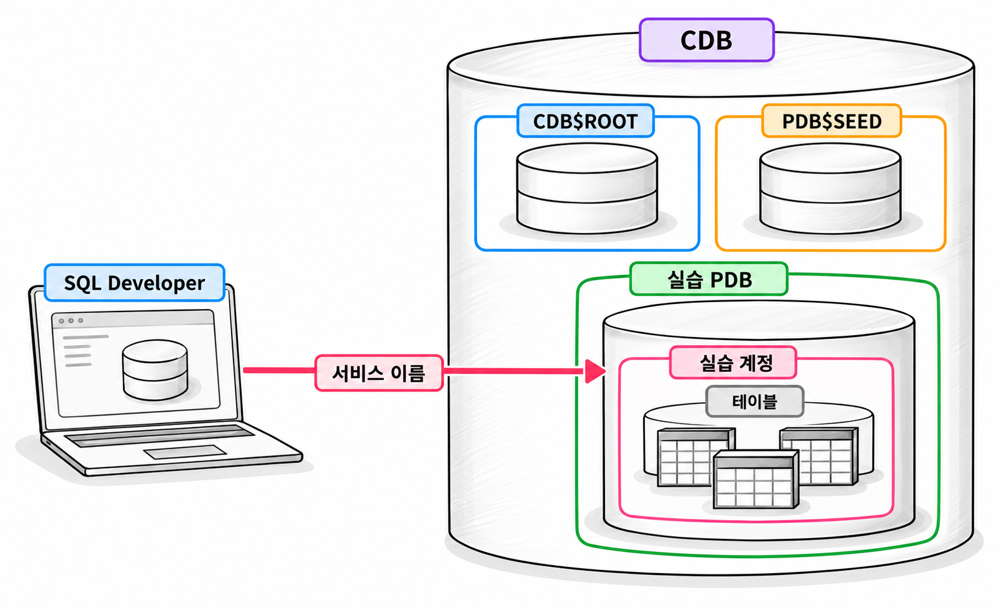
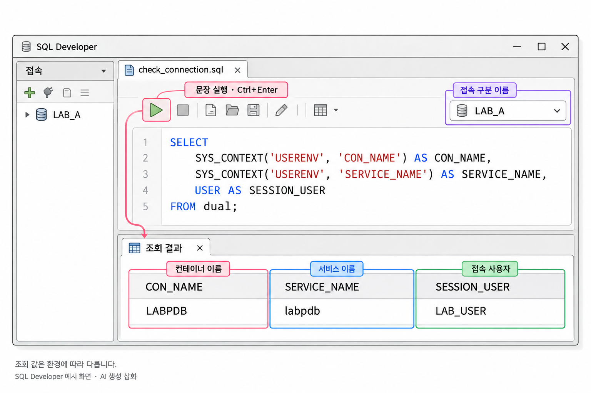
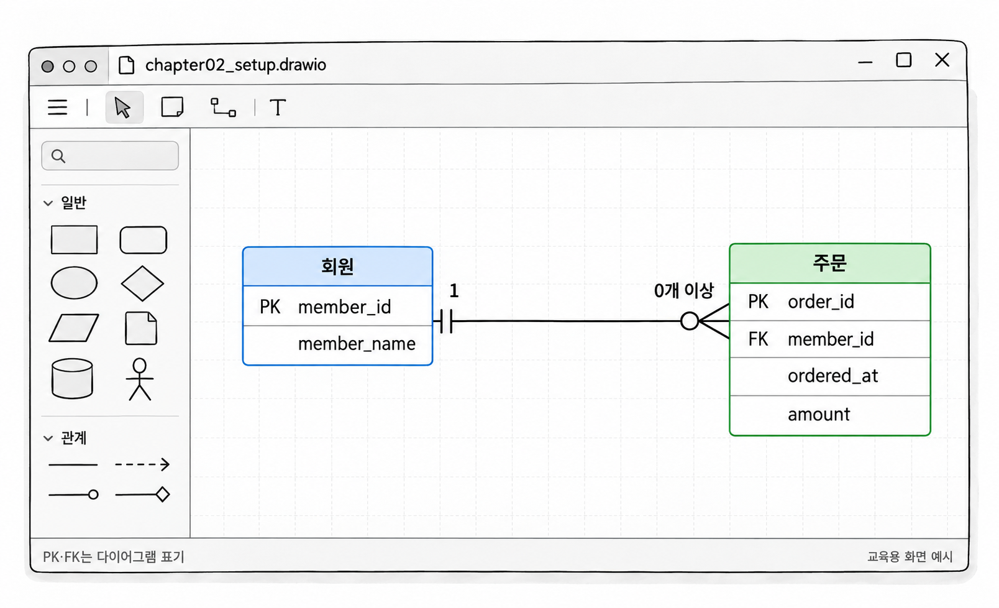

2장. Oracle 실습 환경 구성
1. Oracle Database 21c 접속 준비
1.1 실습 서버 접속 정보와 에디션·기능 확인
이 책은 Oracle Database 21c가 준비된 서버에 접속하여 실습합니다. SQL은 SQL Developer에서 실행하고, 데이터 모델은 draw.io로 그립니다. SQL Developer를 설치해도 데이터베이스 서버가 함께 설치되지는 않습니다.
접속하기 전에 다음 정보를 서버 관리자에게 받습니다. 로컬에 설치한 서버라면 설치할 때 지정한 값을 확인합니다.
| 항목 | 의미 | 기록할 값 |
|---|---|---|
| 호스트 이름 | 데이터베이스 서버의 주소 | 서버의 IP 주소 또는 도메인 |
| 포트 | 접속 요청을 받는 포트 번호 | 서버에 설정된 번호 |
| 서비스 이름 | 접속할 데이터베이스 서비스를 식별하는 이름 | 실습 PDB에 연결되는 서비스 이름 |
| 사용자 이름 | 실습에 사용할 계정 | 개인별 실습 계정 |
| 비밀번호 | 계정을 인증하는 비밀값 | 별도로 보관 |
| 접속 경로 | 서버까지 접근하는 방법 | 내부망·VPN 등 필요한 조건 |
기본 포트로 1521을 사용하는 환경이 많지만, 실제 설정값을 우선합니다. 로컬 서버의 주소로 사용하는 localhost는 SQL Developer가 실행 중인 컴퓨터를 뜻합니다. 원격 서버에 접속하면서 호스트 이름을 localhost로 입력하면 원격 서버에 도달하지 않습니다.
서버의 버전과 에디션도 구분해야 합니다. 버전은 제품의 릴리스를 뜻합니다. 에디션은 제공 기능과 사용 조건이 다른 제품 구성을 뜻합니다. 같은 21c라도 모든 환경에서 같은 기능을 사용할 수 있는 것은 아닙니다.
접속을 만든 뒤 다음 SQL을 실행하여 버전 정보를 확인합니다.
예제 2-1 — Oracle 버전과 에디션 확인하기
파일명: check_version.sql
SELECT banner_full
FROM v$version;실행 결과
BANNER_FULL에 Oracle Database의 버전과 에디션 정보가 표시됩니다. 제품명과 세부 버전은 서버 환경에 따라 다릅니다.
조회 권한이 없어 오류가 나면 관리자에게 버전 정보를 요청합니다. 버전 확인을 위해 실습 계정에 관리자 권한을 부여할 필요는 없습니다.
파티셔닝과 성능 진단 기능을 사용하기 전에는 지원 에디션과 이용 조건을 확인합니다. 기능이 설치되어 있거나 SQL이 실행된다는 사실만으로 사용 권한까지 확인되지는 않습니다. 관리자는 실습 서버에서 허용된 기능과 관리 팩의 범위를 안내해야 합니다.
1.2 CDB·PDB의 구분과 실습 PDB 접속
Oracle Database 21c는 컨테이너 데이터베이스(Container Database, CDB) 구조를 사용합니다. CDB에는 관리용 루트와 플러거블 데이터베이스(Pluggable Database, PDB) 등이 포함됩니다. PDB는 애플리케이션에서 하나의 데이터베이스처럼 접속하여 사용하는 단위입니다.
접속을 준비할 때는 다음 이름을 구별하면 됩니다.
| 구분 | 역할 | 실습 대상으로 사용하는가 |
|---|---|---|
CDB$ROOT | CDB 전체를 관리하는 루트 | 사용하지 않음 |
PDB$SEED | 새 PDB를 만들 때 사용하는 기본 틀 | 사용하지 않음 |
| 실습 PDB | 실습 계정과 테이블을 두는 공간 | 사용함 |
SQL Developer에서는 실습 PDB에 연결되는 서비스 이름을 입력합니다. PDB 이름과 서비스 이름이 비슷할 수 있지만, 반드시 같지는 않습니다. 관리자에게 받은 서비스 이름을 그대로 사용합니다.

접속에 성공했더라도 접속 대상이 맞는지 확인해야 합니다.
예제 2-2 — 접속한 PDB와 사용자 확인하기
파일명: check_connection.sql
SELECT
SYS_CONTEXT('USERENV', 'CON_NAME') AS container_name,
SYS_CONTEXT('USERENV', 'SERVICE_NAME') AS service_name,
SYS_CONTEXT('USERENV', 'SESSION_USER') AS session_user,
SYS_CONTEXT('USERENV', 'CURRENT_SCHEMA') AS current_schema
FROM dual;실행 결과
컨테이너 이름, 서비스 이름, 접속 사용자, 현재 스키마가 한 행으로 표시됩니다. 실습 PDB가 LABPDB, 계정이 LAB_USER라면 컨테이너 이름은 LABPDB로 표시됩니다. 접속 사용자는 LAB_USER로 표시됩니다. 서비스 이름은 실제 서버 설정에 따라 달라집니다.
SYS_CONTEXT()는 접속 환경 정보를 확인하는 함수입니다. 위 SQL은 데이터나 설정을 변경하지 않습니다.
CONTAINER_NAME이 CDB$ROOT라면 실습을 시작하지 않습니다. 접속 설정의 서비스 이름을 실습 PDB용으로 고친 뒤 다시 연결합니다.
1.3 실습 계정·스키마·권한 확인
스키마(schema)는 한 사용자가 소유한 테이블, 인덱스 같은 객체의 집합입니다. Oracle에서는 사용자와 같은 이름의 스키마가 연결됩니다. LAB_USER가 테이블을 만들면 보통 LAB_USER 스키마의 객체가 됩니다.
실습에는 개인별로 분리된 일반 계정을 사용합니다. SYS와 SYSTEM은 관리용 계정이므로 예제 테이블을 만드는 계정으로 사용하지 않습니다.
권한(privilege)은 데이터베이스에서 특정 작업을 할 수 있는 자격입니다. 접속에는 CREATE SESSION, 테이블 생성에는 CREATE TABLE 권한이 필요합니다. 자신의 테이블에 일반 인덱스를 만드는 데는 별도의 CREATE ANY INDEX 권한이 필요하지 않습니다.
테이블 생성 권한과 저장공간 사용 허용량도 구별합니다. 테이블스페이스(tablespace)는 저장공간을 논리적으로 관리하는 단위입니다. 계정에는 객체를 저장할 테이블스페이스가 필요합니다. 그 공간을 사용할 수 있는 할당량(quota)도 필요합니다.
예제 2-3 — 계정 설정과 사용 가능한 권한 확인하기
파일명: check_account.sql
SELECT
username,
account_status,
default_tablespace,
temporary_tablespace
FROM user_users;
SELECT privilege
FROM session_privs
ORDER BY privilege;
SELECT
tablespace_name,
bytes,
max_bytes
FROM user_ts_quotas
ORDER BY tablespace_name;실행 결과
첫 번째 조회에는 자신의 계정 정보가 표시됩니다. 두 번째 조회에는 현재 세션에서 사용 가능한 시스템 권한이 표시됩니다. 세 번째 조회에는 테이블스페이스별 사용량과 할당량이 표시됩니다.
MAX_BYTES가 -1이면 해당 테이블스페이스의 할당량에 제한이 없다는 뜻입니다. 할당량 조회에 행이 없더라도 UNLIMITED TABLESPACE 권한이 있다면 공간을 사용할 수 있습니다.
권한이 부족하면 필요한 작업과 오류 메시지를 관리자에게 전달합니다. 이후 실행 통계를 조회할 때 필요한 권한은 해당 실습에 맞추어 추가합니다.
2. SQL Developer 사용
2.1 접속 생성과 SQL·스크립트 실행
SQL Developer의 접속 목록에서 새 접속을 만듭니다. 메뉴 이름은 설치 버전과 언어 설정에 따라 조금 다를 수 있습니다.
접속 생성 순서
- 접속 목록에서 새 데이터베이스 접속을 선택합니다.
- 접속 이름을
LAB_A로 지정합니다. - 발급받은 사용자 이름과 비밀번호를 입력합니다.
- 접속 유형은 기본 접속인
Basic으로 선택합니다. - 역할은 일반 접속인
Default로 선택합니다. - 호스트 이름과 포트를 입력합니다.
Service name을 선택하고 실습 PDB의 서비스 이름을 입력합니다.Test로 접속을 확인한 뒤Connect를 누릅니다.
접속 이름 LAB_A는 SQL Developer에서 접속을 구별하는 이름입니다. 데이터베이스 사용자 이름이나 서비스 이름을 바꾸지는 않습니다.
접속에 실패하면 오류에 따라 확인할 대상을 좁힙니다.
| 오류 코드 | 먼저 확인할 내용 |
|---|---|
ORA-01017 | 사용자 이름·비밀번호와 접속 대상 PDB |
ORA-28000 | 계정 잠금 여부 |
ORA-12514 | 서비스 이름과 서버의 서비스 등록 상태 |
ORA-12541 | 호스트·포트와 리스너 실행 상태 |
리스너(listener)는 서버에서 접속 요청을 받는 구성 요소입니다. 호스트나 포트가 잘못되어도 리스너에 도달하지 못할 수 있습니다. 오류가 났다고 곧바로 서버 문제로 단정하지 않습니다.
접속 후에는 SQL 워크시트에서 SQL을 실행합니다. 다음 두 실행 방식을 구별합니다.
| 실행 방식 | 기본 단축키 | 용도 | 결과 위치 |
|---|---|---|---|
| 문장 실행 | Ctrl+Enter | 현재 문장 또는 선택한 SQL 실행 | 조회 결과 표 |
| 스크립트 실행 | F5 | 여러 문장을 순서대로 실행 | Script Output |
단축키를 변경한 환경에서는 도구 모음의 실행 버튼을 사용합니다. SQL 파일을 실행할 때는 워크시트 오른쪽 위의 접속 이름도 확인합니다.
예제 2-3처럼 SQL이 여러 개 있는 파일은 F5로 실행합니다. 조회 결과를 표로 자세히 보고 싶다면 문장 하나에 커서를 두고 Ctrl+Enter로 실행합니다.
스크립트 중간에 오류가 발생해도 후속 문장이 계속 실행될 수 있습니다. 처음 실행하는 변경 스크립트는 준비 DDL, 데이터 입력, 검증, 커밋을 나누어 실행합니다. 각 구간의 Script Output을 확인하고, 오류가 있으면 실행 중인 스크립트를 취소합니다. 같은 세션에서 ROLLBACK한 뒤 오류 원인과 남아 있는 객체를 확인합니다. 실패 전에 실행된 DDL과 암묵적으로 커밋된 변경은 롤백되지 않습니다. 오류를 해결하기 전에는 다음 구간이나 COMMIT을 실행하지 않습니다.

생성형 예시 · 실제 실행 안 함
2.2 자동 커밋 설정과 세션 구분
커밋(commit)은 데이터 변경을 확정하는 작업입니다. SQL Developer의 자동 커밋이 켜져 있으면 워크시트에서 실행한 데이터 변경이 자동으로 확정됩니다.
이 책에서는 변경을 확인한 뒤 직접 COMMIT 또는 ROLLBACK을 실행합니다. 실습 전에 환경설정에서 Database > Advanced의 Autocommit을 해제합니다. 설치 버전에 따라 설정 위치가 다르면 환경설정에서 Autocommit을 찾습니다.
자동 커밋을 껐더라도 모든 작업을 되돌릴 수 있는 것은 아닙니다. CREATE TABLE과 같은 DDL은 암묵적 커밋을 일으킵니다. 테이블을 만들기 전에 다른 실습의 미확정 변경이 남아 있지 않도록 합니다.
세션(session)은 데이터베이스에 접속하여 작업하는 연결 단위입니다. 워크시트 탭을 두 개 열었다고 세션도 두 개가 되지는 않습니다. SQL Developer는 같은 이름의 접속을 여러 화면에서 공유할 수 있습니다. 같은 세션을 공유하면 한 워크시트의 커밋이 다른 워크시트의 미확정 변경에도 영향을 줍니다.
두 세션 실습을 위해 LAB_A의 접속 정보를 복제하고 이름을 LAB_B로 저장합니다. 사용자와 서비스는 같게 두고 접속 이름을 다르게 지정합니다. 별도의 비공유 워크시트는 Ctrl+Shift+N으로 열 수 있습니다.
두 접속이 서로 다른 세션인지 다음 SQL로 확인합니다.
예제 2-4 — 두 접속의 세션 구별하기
파일명: check_session.sql
SELECT
SYS_CONTEXT('USERENV', 'SESSION_USER') AS session_user,
SYS_CONTEXT('USERENV', 'INSTANCE_NAME') AS instance_name,
SYS_CONTEXT('USERENV', 'SID') AS session_id
FROM dual;실행 결과
LAB_A와 LAB_B에서 각각 실행하면 접속 사용자 이름은 같습니다. 같은 인스턴스에 연결된 두 세션의 SESSION_ID는 서로 다릅니다. 세션 번호 자체는 접속할 때마다 달라질 수 있습니다.
2.3 객체·제약조건·인덱스 확인
SQL Developer의 접속 목록을 펼치면 테이블과 인덱스 같은 객체를 확인할 수 있습니다. 테이블을 선택하면 컬럼, 데이터, 제약조건, 인덱스 등을 보여 주는 탭이 나타납니다.
인덱스(index)는 데이터에 접근하는 데 사용하는 별도의 구조입니다. 이 장에서는 인덱스가 존재하는지 확인하는 방법만 익힙니다. 생성 기준과 동작 원리는 이후 장에서 다룹니다.
객체를 생성했는데 목록에 나타나지 않으면 새로 고침을 누릅니다. 목록에 필터가 적용되어 있는지도 확인합니다.
화면에서 확인한 정보는 SQL로도 조회할 수 있습니다. Oracle은 객체 정보를 데이터 사전(data dictionary)에서 관리합니다. USER_로 시작하는 뷰는 주로 현재 사용자가 소유한 객체 정보를 제공합니다.
예제 2-5 — 실습 객체 목록 확인하기
파일명: check_objects.sql
SELECT table_name
FROM user_tables
WHERE table_name LIKE 'LAB2!_%' ESCAPE '!'
ORDER BY table_name;
SELECT
table_name,
constraint_name,
constraint_type,
status
FROM user_constraints
WHERE table_name LIKE 'LAB2!_%' ESCAPE '!'
ORDER BY table_name, constraint_name;
SELECT
table_name,
index_name,
uniqueness,
status
FROM user_indexes
WHERE table_name LIKE 'LAB2!_%' ESCAPE '!'
ORDER BY table_name, index_name;실행 결과
이 장의 실습 테이블을 만들기 전에는 조회 결과가 없을 수 있습니다. 3.2항의 데이터를 준비한 뒤 다시 실행하면 LAB2_로 시작하는 테이블이 표시됩니다. 관련 제약조건과 인덱스도 표시됩니다.
제약조건 종류에서 P는 기본키, R은 외래키, U는 유일성 제약조건입니다. C에는 CHECK와 NOT NULL 제약조건이 포함됩니다.
따옴표 없이 만든 객체 이름은 데이터 사전에 대문자로 저장됩니다. 따라서 예제의 이름 검색 조건도 대문자로 작성합니다.
3. draw.io와 실습 데이터 준비
3.1 ERD 표기와 다이어그램 작성
개체 관계 다이어그램(Entity Relationship Diagram, ERD)은 관리할 데이터와 데이터 사이의 관계를 표현하는 그림입니다. 이 책에서는 draw.io로 ERD를 작성합니다.
draw.io의 웹 버전 또는 데스크톱 버전을 열고 빈 다이어그램을 만듭니다. 도형 목록의 More Shapes에서 Entity Relation 도형을 활성화합니다. 메뉴가 번역된 환경에서는 개체 관계에 해당하는 항목을 찾습니다.
이 책에서는 까마귀발 표기법(Crow’s Foot notation)을 사용합니다. 관계의 수량을 선 끝의 기호로 나타내는 방식입니다.
| 표기 요소 | 뜻 |
|---|---|
| 원 | 최소 수량이 0임 |
| 막대 | 수량이 1임 |
| 까마귀발 | 최대 수량이 여러 개임 |
| 원과 막대 | 0개 또는 1개 |
| 원과 까마귀발 | 0개 이상 |
| 막대와 까마귀발 | 1개 이상 |
표기 도구를 익힐 때는 이미 정해진 관계를 옮겨 그립니다. 다음 준비용 모델에서는 회원이 주문을 하지 않아도 된다고 가정합니다. 주문은 반드시 한 회원에게 속합니다.
다이어그램 작성 순서
- 회원과 주문을 나타내는 도형을 하나씩 배치합니다.
- 회원에는
member_id,member_name을 적습니다. - 주문에는
order_id,member_id,ordered_at,amount를 적습니다. - 회원의
member_id와 주문의order_id에PK를 표시합니다. - 주문의
member_id에FK를 표시합니다. - 두 도형을 관계선으로 연결합니다.
- 회원 쪽 끝은 정확히 1, 주문 쪽 끝은 0개 이상으로 표시합니다.
- 파일을
chapter02_setup.drawio로 저장합니다.
선 끝의 기호는 그 끝에 있는 대상의 수량을 나타냅니다. 회원 쪽의 1은 주문 한 건에 연결된 회원이 정확히 한 명이라는 뜻입니다.
도형의 컬럼 이름과 실제 SQL의 컬럼 이름을 맞춥니다. PK와 FK 표시는 다이어그램의 설명입니다. 그림을 저장하는 것만으로 데이터베이스에 제약조건이 생기지는 않습니다.

생성형 예시 · 실제 실행 안 함
3.2 기본 데이터와 튜닝용 대량 데이터 구성
설계 확인용 데이터와 성능 측정용 데이터는 목적이 다릅니다. 적은 데이터는 행 사이의 관계와 조회 결과를 눈으로 확인하기 좋습니다. 대량 데이터는 읽기량과 실행 시간의 차이를 관찰하는 데 사용합니다.
이 장에서는 기본 데이터로 회원 두 명과 주문 세 건을 만듭니다. 튜닝 준비용으로는 주문 십만 건을 별도 테이블에 만듭니다. 모든 테이블 이름에 LAB2_를 붙여 다른 장의 객체와 구별합니다.
다음 예제는 개인 실습 계정에서 한 번 실행합니다. 같은 이름의 테이블이 이미 있다면 3.3항의 초기화 절차로 정리합니다. 계정에는 테이블 생성 권한과 충분한 저장공간이 필요합니다.
예제 2-6 — 기본 데이터와 대량 데이터 준비하기
파일명: prepare_lab2.sql
CREATE TABLE lab2_member (
member_id NUMBER(10)
CONSTRAINT lab2_member_pk PRIMARY KEY,
member_name VARCHAR2(50 CHAR) NOT NULL
);
CREATE TABLE lab2_order (
order_id NUMBER(10)
CONSTRAINT lab2_order_pk PRIMARY KEY,
member_id NUMBER(10) NOT NULL,
ordered_at DATE NOT NULL,
amount NUMBER(12, 0) NOT NULL,
CONSTRAINT lab2_order_member_fk
FOREIGN KEY (member_id)
REFERENCES lab2_member (member_id)
);
INSERT INTO lab2_member (member_id, member_name)
VALUES (1, '김서연');
INSERT INTO lab2_member (member_id, member_name)
VALUES (2, '이도윤');
INSERT INTO lab2_order (order_id, member_id, ordered_at, amount)
VALUES (101, 1, DATE '2026-01-05', 12000);
INSERT INTO lab2_order (order_id, member_id, ordered_at, amount)
VALUES (102, 1, DATE '2026-01-06', 18000);
INSERT INTO lab2_order (order_id, member_id, ordered_at, amount)
VALUES (103, 2, DATE '2026-01-07', 25000);
CREATE TABLE lab2_order_bulk (
order_id NUMBER(10)
CONSTRAINT lab2_order_bulk_pk PRIMARY KEY,
member_id NUMBER(10) NOT NULL,
ordered_at DATE NOT NULL,
status VARCHAR2(10 CHAR) NOT NULL,
amount NUMBER(12, 0) NOT NULL
);
INSERT INTO lab2_order_bulk (
order_id,
member_id,
ordered_at,
status,
amount
)
SELECT
LEVEL,
MOD(LEVEL - 1, 1000) + 1,
DATE '2026-01-01' + MOD(LEVEL - 1, 100),
CASE
WHEN MOD(LEVEL, 100) = 0 THEN 'CANCELLED'
ELSE 'PAID'
END,
(MOD(LEVEL - 1, 20) + 1) * 1000
FROM dual
CONNECT BY LEVEL <= 100000;
COMMIT;
SELECT COUNT(*) AS member_count
FROM lab2_member;
SELECT COUNT(*) AS order_count
FROM lab2_order;
SELECT
status,
COUNT(*) AS row_count,
SUM(amount) AS total_amount
FROM lab2_order_bulk
GROUP BY status
ORDER BY status;실행 결과
객체 생성과 데이터 입력 메시지 뒤에 다음 조회 결과가 표시됩니다. 출력 간격은 SQL Developer 설정에 따라 달라집니다.
MEMBER_COUNT
------------
2
ORDER_COUNT
-----------
3
STATUS ROW_COUNT TOTAL_AMOUNT
----------- --------- ------------
CANCELLED 1000 20000000
PAID 99000 1030000000CONNECT BY LEVEL <= 100000은 준비용 숫자 십만 개를 만드는 구문으로 사용했습니다. 계층 조회의 원리는 23장에서 다룹니다. MOD()로 값이 일정한 간격으로 반복되게 했습니다. 데이터를 다시 만들어도 같은 값이 나오도록 한 것입니다.
LAB2_ORDER_BULK는 회원 번호 1부터 1000까지를 가진 독립적인 성능 실습용 테이블입니다. 회원 두 명만 있는 LAB2_MEMBER와 연결하는 외래키는 두지 않았습니다. 준비용 ERD에는 기본 데이터용 회원·주문 테이블만 반영합니다.
대량 데이터에서는 PAID가 99,000건, CANCELLED가 1,000건입니다. 이렇게 값별 건수가 다른 데이터 분포(data distribution)도 성능 실습의 조건이 됩니다. 행 수가 같아도 값의 분포가 다르면 같은 SQL의 실행 방식이 달라질 수 있습니다.
이 데이터는 규칙적으로 만든 합성 데이터입니다. 실제 업무의 날짜별 주문 집중이나 회원별 주문 편차를 재현한 데이터는 아닙니다.
3.3 실습 초기화와 재현 조건 기록
초기화는 실습 객체를 지우고 준비 스크립트를 다시 실행하여 같은 출발 상태를 만드는 작업입니다. 입력문만 다시 실행하면 기본키가 중복될 수 있으므로, 재실행 전에 객체 상태를 확인합니다.
다음 예제는 예제 2-6이 끝까지 실행되어 세 테이블이 모두 존재하는 상태에서 사용합니다. 반드시 LAB_A 또는 LAB_B의 실습 계정인지 먼저 확인합니다.
예제 2-7 — 이 장의 실습 테이블 제거하기
이어서: 예제 2-6
파일명: reset_lab2.sql
DROP TABLE lab2_order PURGE;
DROP TABLE lab2_order_bulk PURGE;
DROP TABLE lab2_member PURGE;실행 결과
세 테이블이 제거됩니다. 테이블에 속한 제약조건과 인덱스도 함께 제거됩니다. 테이블이 이미 없는 경우 해당 문장에서 ORA-00942 오류가 발생합니다.
PURGE를 붙였으므로 제거한 테이블은 휴지통에 보관되지 않습니다. 이 작업은 ROLLBACK으로 되돌릴 수 없습니다. 자식 테이블인 LAB2_ORDER를 먼저 제거한 뒤 부모 테이블인 LAB2_MEMBER를 제거합니다.
초기화가 끝나면 prepare_lab2.sql을 다시 실행합니다. 중간에 실패했다면 2.1항의 절차에 따라 실행을 중단하고 같은 세션에서 ROLLBACK합니다. 남아 있는 테이블은 예제 2-5로 확인합니다. 해당 실습 객체만 자식 테이블부터 제거한 뒤 준비 스크립트를 처음부터 실행합니다. 이미 없는 테이블의 제거 오류와 새로 발생한 오류를 구별합니다. 마지막 건수와 합계가 맞고 앞선 오류가 없는지 확인한 뒤 실습을 계속합니다.
다시 만든 데이터는 예제 2-6의 건수와 합계로 검증합니다. 건수만 확인하면 금액이나 상태가 잘못 입력된 문제를 놓칠 수 있습니다.
실습 결과를 비교하려면 실행 조건도 함께 남겨야 합니다.
| 기록 항목 | 이 장에서 남길 내용 |
|---|---|
| 서버 | Oracle 버전·에디션·접속 PDB |
| 계정 | 사용자 이름과 기본 테이블스페이스 |
| 실행 도구 | SQL Developer 버전과 자동 커밋 해제 여부 |
| 준비 스크립트 | 파일명과 수정한 내용 |
| 데이터 | 테이블별 건수, 상태별 건수와 금액 합계 |
| 객체 | 제약조건과 인덱스 목록 |
| 통계 | 통계 수집 여부와 수집 시점 |
| 측정 조건 | 조회 조건, 결과를 읽은 범위, 반복 횟수, 동시 작업 여부 |
여기서 통계는 옵티마이저가 실행 방식을 선택할 때 참고하는 데이터 규모와 분포 정보입니다. 데이터를 다시 만들었다고 통계까지 이전과 같은 상태가 되지는 않습니다. 통계 수집 방법은 10장에서 다룹니다.
조회 시간을 기록할 때는 결과를 몇 행까지 읽었는지도 적습니다. 첫 화면만 표시한 시간과 전체 결과를 읽은 시간은 다릅니다. 공유 서버의 다른 작업도 실행 시간에 영향을 줍니다. 한 번의 실행 시간만으로 성능 차이를 판단하지 않습니다.
이 장의 준비가 끝나면 실습 PDB와 계정을 확인할 수 있어야 합니다. 두 접속의 세션을 구별하고 객체 목록을 조회할 수 있어야 합니다. 준비 데이터를 같은 건수와 합계로 다시 만들 수 있어야 합니다.